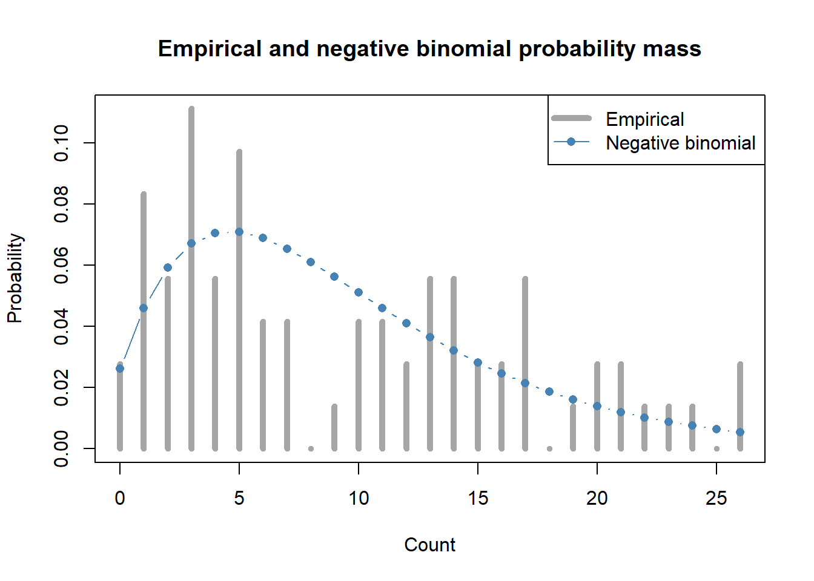

data(InsectSprays, package = "datasets")Introduction to Probability (Discrete) - Solutions
The fully worked first exercise is on the student practical page. These solutions follow the same assumed models, tasks, and seeds as Exercises 2–4 on that page.
Exercise 2: Checking for overdispersion
We are going to use a built-in dataset in R on counts of tobacco hornworm, in agricultural experimental units treated with six different insecticides. We can load the data as follows:
Calculate the mean and variance for
count. Is there evidence of overdispersion?Repeat the same calculations but not do it separately for each
spraytreatment (tip: use the tools for data transformation we learnt in Chapter 1). Is there still evidence of overdispersion?Which model would you use
countwhen ignoring thespraytreatment and which model would you try when doing it separately for eachspraytreatment?Estimate the parameters of the negative binomial using the mean and the variance of the sample (tip: check the formulae in the theory chapter). Compare the probability mass of the empirical distribution and the negative binomial with the parameters that you just calculated. How well does the model capture the variation in the data?
Solution
Question 1
Load the data and compare the sample variance with the mean. For a Poisson distribution, the mean and variance are equal, so a variance much larger than the mean suggests overdispersion.
data(InsectSprays, package = "datasets")
pooled_mean = mean(InsectSprays$count)
pooled_variance = var(InsectSprays$count)
c(
mean = pooled_mean,
variance = pooled_variance,
dispersion_ratio = pooled_variance / pooled_mean
) mean variance dispersion_ratio
9.500000 51.887324 5.461824 The mean is about 9.5, the variance is 51.9, and the variance-to-mean ratio is 5.5. This is substantial overdispersion when the treatments are pooled.
Question 2
Now calculate the summaries separately for each spray treatment:
library(dplyr)
spray_groups = group_by(InsectSprays, spray)
spray_summary = summarise(
spray_groups,
n = n(),
mean = mean(count),
variance = var(count),
dispersion_ratio = variance / mean,
.groups = "drop"
)
spray_summary# A tibble: 6 × 5
spray n mean variance dispersion_ratio
<fct> <int> <dbl> <dbl> <dbl>
1 A 12 14.5 22.3 1.54
2 B 12 15.3 18.2 1.19
3 C 12 2.08 3.90 1.87
4 D 12 4.92 6.27 1.27
5 E 12 3.5 3 0.857
6 F 12 16.7 38.6 2.32 Five of the six treatments have a variance-to-mean ratio greater than one, though the amount of overdispersion is much smaller than when pool. Notice how a big part of the overdispersion could be explain by the fact that we were looking at different treatments pooled together.
Question 3
Ignoring spray, a negative binomial model is a reasonable choice because the pooled counts are strongly overdispersed. When accounting for spray, a Poisson model with spray as a predictor is a useful starting point, though we might still end up using a Negative Binomial (we will cover formal methods of model comparison later in the book).
Question 4
For the negative binomial parameterization used in R,
\[ \operatorname{Var}(X)=\mu+\frac{\mu^2}{k}, \]
so the shape parameter is
\[ k=\frac{\mu^2}{\operatorname{Var}(X)-\mu}. \]
To match the empirical distribution’s variance, calculate variance of the sample. To emphasize this I avoid using var() which is actually an statistical estimator and not the variance of the sample (but in practice it is not a critical issue unless \(n\) is very small, so do not worry too much about it):
counts = InsectSprays$count
mu_hat = mean(counts)
empirical_variance = mean((counts - mu_hat)^2)
k_hat = mu_hat^2 / (empirical_variance - mu_hat)
c(
mean = mu_hat,
empirical_variance = empirical_variance,
k = k_hat
) mean empirical_variance k
9.50000 51.16667 2.16600 The empirical variance is about 51.2, giving an estimated shape parameter of about 2.2.
Compare the empirical probability mass with that of the estimated negative binomial:
support = 0:max(counts)
empirical_mass = as.numeric(
table(factor(counts, levels = support))
) / length(counts)
negative_binomial_mass = dnbinom(
support,
size = k_hat,
mu = mu_hat
)
plot(
support,
empirical_mass,
type = "h",
lwd = 5,
col = "grey65",
xlab = "Count",
ylab = "Probability",
main = "Empirical and negative binomial probability mass"
)
lines(
support,
negative_binomial_mass,
type = "b",
pch = 16,
col = "steelblue"
)
legend(
"topright",
legend = c("Empirical", "Negative binomial"),
col = c("grey65", "steelblue"),
lty = 1,
pch = c(NA, 16),
lwd = c(5, 1)
)
The estimated negative binomial matches the empirical mean and variance by construction, and allows more variation than a Poisson model. However, pooling treatments combines groups with very different count levels. A single negative binomial distribution may therefore not capture all the patterns in the empirical distribution and it would be better to account for the structure of the data explictly (we will do that in Chapter 8).
Exercise 3: Overdispersed quadrat counts
Let’s assume a negative binomial distribution with a mean (\(\mu = 6\)) and shape parameters (\(k = 0.8\)).
- Calculate the theoretical mean and variance using the formulas. Then verify them using dnbinom() and weighted sums.
- Generate a sample of size 500.
- Calculate the mean and variance of this sample in R.
- Compare the negative binomial distribution with a Poisson distribution having the same mean. How do they differ? What is the variance/mean ratio of the sample? Plot their probability mass functions.
Solution
Question 1
For a negative binomial distribution with \(\mu=6\) and \(k=0.8\),
\[ E[X]=\mu=6 \]
and
\[ \operatorname{Var}(X) = \mu+\frac{\mu^2}{k} = 6+\frac{6^2}{0.8} = 51. \]
We can verify these values using the probability mass function and weighted sums. The distribution’s support is infinite; using values from 0 to 1,000 makes the omitted tail negligible.
mu = 6
k = 0.8
x_theory = 0:1000
probability = dnbinom(x_theory, size = k, mu = mu)
c(
probability_sum = sum(probability),
weighted_mean = sum(x_theory * probability),
weighted_variance = sum((x_theory - mu)^2 * probability)
) probability_sum weighted_mean weighted_variance
1 6 51 Question 2
Generate a sample of size 500, then calculate its mean and empirical variance. The empirical variance uses the divisor \(n\), as in the empirical distribution.
set.seed(123)
sample_counts = rnbinom(
n = 500,
size = k,
mu = mu
)
sample_mean = mean(sample_counts)
sample_variance = mean((sample_counts - sample_mean)^2)
c(
mean = sample_mean,
empirical_variance = sample_variance,
variance_mean_ratio = sample_variance / sample_mean,
variance_using_var = var(sample_counts)
) mean empirical_variance variance_mean_ratio variance_using_var
5.826000 54.975724 9.436273 55.085896 Question 3
The sample summaries vary between simulations, but should be broadly consistent with a mean of 6 and a variance of 51. The theoretical variance-to-mean ratio is \(51/6=8.5\); the sample ratio will not necessarily equal it.
Question 4
A Poisson distribution with the same mean has variance 6, while the negative binomial has variance 51. The negative binomial therefore has more probability near zero and in the upper tail.
x = 0:40
negative_binomial_mass = dnbinom(x, size = k, mu = mu)
poisson_mass = dpois(x, lambda = mu)
matplot(
x,
cbind(negative_binomial_mass, poisson_mass),
type = "b",
pch = c(16, 1),
lty = c(1, 2),
lwd = 2,
col = c("firebrick", "steelblue"),
xlab = "Count",
ylab = "Probability",
main = "Negative binomial and Poisson probability mass"
)
legend(
"topright",
legend = c("Negative binomial", "Poisson"),
col = c("firebrick", "steelblue"),
pch = c(16, 1),
lty = c(1, 2),
lwd = 2
)
Exercise 4: Asymptotic convergence
Simulate Poisson observations with \(\lambda=3\) for two sample sizes: 10 and 1,000.
- Calculate the mean, median and variance for each sample (use the actual variance of the sample, not
var()). - Repeat point 1 four times using different random seeds (tip: use a foor loop). How much do the sample properties vary?
- Compare these sample properties to the model values at the two sample sizes. How does the median and mean differ in their behavior? What is happening to the variation across repeated samples as sample size increases?
Solution
Question 1
For a Poisson distribution with \(\lambda=3\), the model mean and variance are both 3, and the model median is also 3.
First simulate one sample of each size. Calculate the empirical variance using the divisor \(n\), rather than using var().
lambda = 3
sample_sizes = c(10, 1000)
initial_results = data.frame(
n = integer(),
mean = numeric(),
median = numeric(),
variance = numeric()
)
set.seed(123)
for (sample_size in sample_sizes) {
observations = rpois(sample_size, lambda = lambda)
sample_mean = mean(observations)
initial_results = rbind(
initial_results,
data.frame(
n = sample_size,
mean = sample_mean,
median = median(observations),
variance = mean((observations - sample_mean)^2)
)
)
}
initial_results n mean median variance
1 10 3.300 3 2.810000
2 1000 2.963 3 2.903631Question 2
Repeat the simulations four times, using a different seed for each repetition:
seeds = c(11, 22, 33, 44)
repeated_results = data.frame(
seed = integer(),
n = integer(),
mean = numeric(),
median = numeric(),
variance = numeric()
)
for (seed in seeds) {
set.seed(seed)
for (sample_size in sample_sizes) {
observations = rpois(sample_size, lambda = lambda)
sample_mean = mean(observations)
repeated_results = rbind(
repeated_results,
data.frame(
seed = seed,
n = sample_size,
mean = sample_mean,
median = median(observations),
variance = mean((observations - sample_mean)^2)
)
)
}
}
repeated_results seed n mean median variance
1 11 10 2.100 1.5 3.690000
2 11 1000 2.999 3.0 2.966999
3 22 10 3.600 3.0 3.040000
4 22 1000 2.918 3.0 3.043276
5 33 10 2.800 3.0 2.760000
6 33 1000 2.972 3.0 2.997216
7 44 10 2.100 2.5 1.490000
8 44 1000 2.894 3.0 2.946764Question 2
Compare the results with the model values, then summarize the variation in the sample statistics across repetitions:
model_values = data.frame(
n = sample_sizes,
mean = lambda,
median = qpois(0.5, lambda = lambda),
variance = lambda
)
model_values n mean median variance
1 10 3 3 3
2 1000 3 3 3aggregate(
cbind(mean, median, variance) ~ n,
data = repeated_results,
FUN = sd
) n mean median variance
1 10 0.71414284 0.7071068 0.92291206
2 1000 0.04821048 0.0000000 0.04195454The model values are the same for both sample sizes. With \(n=10\), the sample mean, median, and variance can differ noticeably from their model values. With \(n=1{,}000\), they will generally be closer to 3 and vary less across repetitions.
The mean changes smoothly between samples, while the median is a quantile and changes in discrete steps. For even sample sizes, R’s median can also be halfway between two integer counts. Because the empirical variance uses divisor \(n\), it tends to be slightly below the model variance for finite samples; this difference becomes negligible as sample size increases. The four repetitions illustrate the general pattern, though more repetitions would provide a clearer picture of the variation.